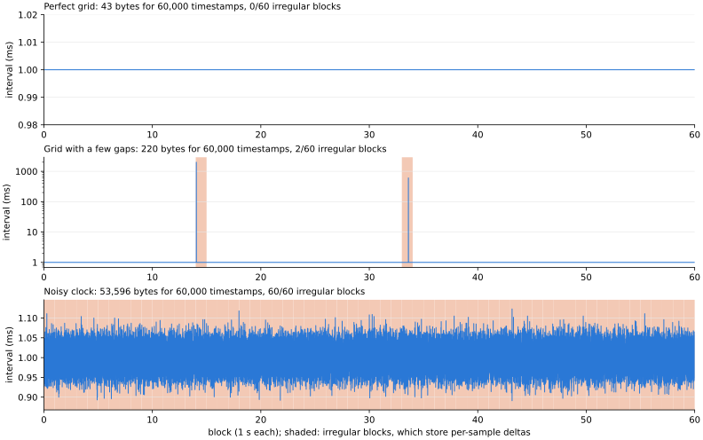

← codec comparison (index.html) · SPEC §2a: time axis
fluxcode can store each sample's timestamp exactly next to its values. This page covers only that time
axis: what the timestamps add to a one-minute unit (60 blocks of 1,000 samples, nominally 1 kHz, int64 ns ticks).
Every number here is the unit with times minus the same unit without them. For scale, that unit's values alone take
20,951 bytes (a 4.12 Hz sine at the default settings), 178 µs to encode and
113 µs to decode.
Regenerate: cd experimental && uv run python make_time_report.py.
A perfect grid, and a perfect grid with a few gaps, are by far the most common timestamps in practice. A noisy clock (host timestamps on arrival) is the third common shape, and the only one of the three where the timestamps cost more than the values (here about three times as much).

| shape | what it is | bytes (example) | bits/sample | irregular blocks | vs values | bytes over 64 units: median | max | encode +µs | decode +µs |
|---|---|---|---|---|---|---|---|---|---|
| Perfect grid | Every interval exactly 1 ms: hardware-clocked acquisition, resampled or synthesized series. | 40 | 0.005 | 0/60 | 0.2% | 40 | 44 | 16 | 11 |
| Grid with a few gaps | A perfect grid that sometimes skips: dropped packets, reconnects, a paused logger (Poisson, mean 2 gaps per minute, each 5 ms to 3 s). | 232 | 0.031 | 2/60 | 1.1% | 231 | 807 | 25 | 16 |
| Noisy clock | Host timestamps on arrival: 1 ms nominal, σ = 20 µs jitter, µs resolution. | 63,623 | 8.483 | 60/60 | 303.7% | 63,614 | 64,588 | 250 | 156 |
The example is the median-size unit of 64 seeds per shape. µs are single thread, best of 30, Apple M3; vs values is the timestamps' bytes as a share of the values' 20,951.
A grid with k gaps per minute, each 5 ms to 3 s; median of 16 units per row.
| gaps per minute | irregular blocks | bytes | bits/sample | bytes per gap |
|---|---|---|---|---|
| 0 | 0/60 | 41 | 0.005 | — |
| 1 | 1/60 | 94 | 0.013 | 53 |
| 2 | 2/60 | 229 | 0.031 | 94 |
| 5 | 5/60 | 357 | 0.048 | 63 |
| 10 | 9/60 | 520 | 0.069 | 48 |
| 20 | 17/60 | 820 | 0.109 | 39 |
| 60 | 38/60 | 1,430 | 0.191 | 23 |
For comparison, shapes with many more irregular blocks (from bench/time_axis.py). Only the
cases with random intervals cost more than the values.
| timestamps | bytes | bits/sample | irregular blocks | encode +µs | decode +µs |
|---|---|---|---|---|---|
| 1 kHz, 20 gaps | 664 | 0.089 | 19/60 | 73 | 50 |
| 1 kHz, 1% dropped | 3,016 | 0.402 | 60/60 | 180 | 153 |
| drifting clock (0.99998 ms) | 1,372 | 0.183 | 60/60 | 177 | 166 |
| jitter σ=10 µs, ns resolution | 125,367 | 16.716 | 60/60 | 251 | 212 |
| jitter σ=10 µs, µs resolution | 51,974 | 6.930 | 60/60 | 268 | 171 |
| Poisson events, mean 1 ms, µs | 88,379 | 11.784 | 60/60 | 288 | 185 |
| Poisson events, mean 1 ms, ns | 163,155 | 21.754 | 60/60 | 293 | 192 |
| deadband logging, ms grid | 56,875 | 7.583 | 60/60 | 348 | 234 |
| bursts 10 kHz / idle | 122 | 0.016 | 60/60 | 166 | 108 |
1% dropped and a drifting clock stay cheap: their intervals take two or three values. Jitter, Poisson events and deadband logging have random intervals, and ns resolution costs more than µs when the jitter really is at ns resolution.